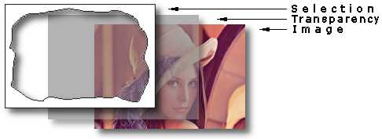

CxImage图像处理库
CxImage
简介&许可证
CxImage 是一个可以加载。保存。显示和转换图像的C++ 类，非常简单快速。
class CxImageis免费，对于 TIFF，JPEG，PNG和ZLIB库， "如果在产品中使用这里源代码，则不需要确认，但会受到赞赏。"
CxImage 是开放源码插件，并在许可协议许可。 简而言之，这意味着你可以使用代码，只要你没有声明它是你自己的代码。
版本6.00中新增的内容有什么新版本？
在文档中报告了错误修正和增强的完整列表，( 请参见 doccximage_history.htm，或者这里链接插件。)。 下面我将重点介绍一些新特性。
使用 CxImage 版本 5.99编写的应用程序应该与新版本同时工作；几种方法的接口是不同的。
旧DLL链接的应用程序不能与新的DLL一起工作；但如果需要，可以编辑声明。 要注意的问题是 ENUM_CXIMAGE_FORMATS: 在旧版本中，CXIMAGE_FORMAT_... 可以更改值，具体取决于相应 CXIMAGE_SUPPORT_... switch 所支持的格式。 在新版本中，CXIMAGE_FORMAT_... 被分配给惟一值。 static 方法，如 GetNumTypes。GetTypeIdFromName。GetTypeIdFromIndex。GetTypeIndexFromId 等，将帮助应用程序管理新策略。
文件格式&链接的C 库
CxImage 使用这些库的最新版本： ，( 1.2.3 )，Jasper ( 1.900.1 )，LibMNG ( 1.0.10 )，LibPNG ( 1.2.24 )。 LibTIFF可以与链接，但 CxImage 分布( 3.5.7，已经修补) 中包含的版本可以读取带有OJPEG压缩的图像，或者使用非标准位的bit。 你的选择取决于你自己。
j2k库( 现在 openjpeg ) 和关联的类 CxImageJ2K 已经从项目中删除。 通过Jasper和CxImageJAS支持JPEG2000图像。
CxImage 6.00包括新的类( CxImageRAW ) 和新的库( LibDCR )，用于从数码相机读取原始图像；通用文件扩展名为： RAW，CRW，NEF，DNG ERF ORF ERF ERF，DCR，DCR，ORF，PEF，PEF，PEF，PEF，PEF。 LibDCR基于棺木 dcraw.c，并提供原始dcraw应用( 查看"dcr。dat"原始目录中包含的项目)的相同特性。 GPL版本 2的限制功能被禁用；在启用受限代码之前，请阅读" libdcr.h"中的许可条款。
CxImageRAW 实现了解码图像的基本功能，SetCodecOption 控制的唯一可以用选项是插值质量(，)。 DECODE_QUALITY_LIN=0, DECODE_QUALITY_VNG=1, DECODE_QUALITY_PPG=2, DECODE_QUALITY_AHD=3 )。
CxImagePNG 已经被改进，可以读取和写入所有 PNG_COLOR_TYPE_... 组合。 png带有"像素深度"，每个通道的8位将被转换为8位，这是 CxImage的主要限制。
CxImageGIF: 更好的支持读取动画 GIF，现在可以在单一通道中解码所有帧，如果启用了 SetRetreiveAllFrames。 CxImage 演示了这个选项，并展示了如何使用带有N 个图像的动画 GIF ( 当程序要求"文件。 全部读取"，选择"取消")。
CxImageBMP: 读取并写入 32位图像( 带alpha层)。 CxImageICO: 读取和写入 Vista ( PNG ) 图标；以及添加多页图标的支持。 CxImageMNG: 使用alpha层读取 MNGs。 CxImageSKA: SKA图像格式的新类，用于某些视频租借应用程序。
CxImageJPG: JPEG格式子菜单的新选项( ENCODE_SUBSAMPLE_422, ENCODE_SUBSAMPLE_444 ) 为 4: 1: 1，可以设置为4: 2: 2 ( 介质) 或者 4: 4.
下表显示压缩图像中不同数量的工件，使用不同的子采样。 4: 4: 4 子采样对于边缘清晰的图像非常有用，以减少JPG压缩的典型模糊效果。
原始图片 JPG图像和文物 质量 75，欠采样 4: 1: JPG图像和文物 质量 75，欠采样 4: 4:
|
便携性
类和项目已经用不同的编译器测试，从，VC++6到 VC++2008，BORLAND C++ Builder 3和 6，部分与wxDev-C++和 MINGW。
所有库的( 感谢 Eric Jesover ) 都提供了UNICODE和非UNICODE配置。
第一次用户或者作为一个基本模板，没有完整的演示项目，提供了一个没有C 库的光版( cximage600_lite )。
控制台( demo2 ) 和CxImageCrtDll项目可以用VC++Express2005和微软平台SDK来构建。 如果你得到像"无法解析的外部。"这样的链接器错误，检查所有的C 库是否已经编译，或者将 gdi32.lib 和 user32.lib 模块添加到LinkerInputAdditional依赖项Dependencies属性。
CxImage 还使用 pocketpc 2003 ；为VC++2005编译器( 感谢 Vincent Richomme ) 提供一个工作版本和演示( cximage600_ce )。 对于旧的嵌入式VC编译器，主要的限制是对异常处理的支持。 为了克服这个问题，try。throw 和 catch 语句已经被 3个宏( 在 ximadef.h 定义。) 替换，并且使用 CXIMAGE_SUPPORT_EXCEPTION_HANDLING 定义可以构建库。 也许解决方案不太优雅，但在禁用异常处理时，对源代码的影响最小。
小型端点和大型端点平台之间的兼容性对于构建的格式( bmp，ico，tga，pcx，gif，ska ) 来说是由 ntohs 和 ntohl 处理的。
演示
几乎所有的新特性都可以在主 CxImage 演示应用程序中进行测试。 这个演示只是一个测试工作台，即使它提供了一些优秀的特性，它不是一个严重的应用。
CQuantizer: 该类与 DecreaseBpp 菜单一起使用。 在以前的版本中出现舍入错误，在某些情况下，白色颜色( 255,255，255 ) 被转换为( 254,254，254 )。 在新版本中，这里错误已经修复。
复制/粘贴: 现在粘贴图元文件图片(。例如从 Office 应用程序中)。 演示内部使用自定义剪贴板格式，以测试 Dump/Undump 方法。 复制工作在活动选择上，使用 CxImageRemove选择复制完整图像。
使用浮动对话框 FloodFill: (。ViewToolsFlood填充 )，可以测试 FloodFill 颜色。公差。透明度和选择。 不透明度= 0和选择启用的情况为"魔杖"。
图形数据提取: ( Filtersgraph数据提取 ) 从图( 从扫描仪获取或者从互联网下载) 提取数字数据。 转换后的值粘贴到剪贴板中，可以保存到文本或者Excel文件中。 数据提取对话框和结果
RedEyeRemove: ( FiltersNon LinearRemove红眼睛 ) 删除图片中经常出现的红眼效果。 你必须选择瞳孔周围的区域，在这里函数将过滤红色通道。 选择也可以是矩形的，也可以包括部分虹膜： 过滤器在围绕选定区域的圆形区域上工作。 原始图片 瞳孔周围的选择 RedEyeRemove 后的结果
|
selectiveblur/unsharpmask: 这些非线性滤波器提高图像质量。 SelectiveBlur 消除了保留细节的"颗粒"噪声(。jpeg制品，或者数码相机噪声)，UnsharpMask 增强了细节，而不增加"平"区域中的噪声。
自定义线性过滤器: ( FiltersLinearCustom ) 为 Filter 函数( 感谢 Priyank Bolia ) 测试新内核的小型图形界面。
直方图: ( colorshistogram。 在noisy的测试中，有许多菜单可以用于测试 HistogramStretch，在有噪声图像的情况下，threshold 参数可以提高算法的鲁棒。 "半饱和"还有"全饱和度"测试 ConvertColorSpace。Histogram 和 Saturate的组合，从而扩展了iframe颜色图中的直方图。 原始图片 + HistogramStretch(2,0.005f) +"饱和度"
|
阈值: ( ColorsThreshold。 和 ColorsAdaptive阈值。 OptimalThreshold 是寻找图像二值化最佳阈值的新方法，可用算法包括： 1 = 最大宽度； 2 = Kittler & Illingworth ； 3 = 最大熵； 4 = 潜在差异； 0 = 平均所有方法( 默认值，并在演示中使用) ；
选项"保留小于阈值的颜色"将测试 Threshold2，用于过滤带有噪声背景的彩色图像，结果将是一个彩色背景。 AdaptiveThreshold 是 OptimalThreshold 在构建可变阈值掩码中的应用。 如果不均匀亮度是最佳的，但一般情况下，如果参数没有优化，那么 AdaptiveThreshold 将很有用。
原始图片
OptimalThreshold + threshold
AdaptiveThreshold
添加阴影: 这个菜单是关于如何组合简单的CxImage 方法(。选择，GaussianBlur，Mix ) 来获得常见效果的一个小示例。 白色背景上的紫色阴影 红色背景上的黑色阴影
|
收费: DrawStringEx 通过 CXTEXTINFO::smooth 实现新选项，可以通过文本工具( ViewToolsText ) 测试它，检查"抗锯齿"选项。
使用 TextBlur ( FiltersNon LinearText模糊 ) 后，可以在后处理中获得类似的效果： 仅在对角线或者圆形边缘上工作的非线性过滤器，不影响垂直或者水平直线。 在下一表格中，对不同的平滑方法进行了比较：
不平滑的DrawStringEx 带平滑的DrawStringEx 使用 TextBlur 进行后处理 带线性 3 x3"柔和" Filter的后置处理
|
|
CxImage结构
在库的垂直层次结构中，CxImage 不是一个清晰的面向对象方法，但是结果很好。 总之，你总是可以使用派生类来执行特定的操作，比如 CxImageTIF 来保存多页的to。
连接所有模块和C 库的粘附是 CxFile，它提供了从磁盘或者内存中访问数据的标准方法。
一个 CxImage 对象基本上是位图，添加了一些成员变量来存储有用的信息：
class CxImage
{
.. .
protected:
void* pDib; //contains the header, the palette, the pixels
BITMAPINFOHEADER head; //standard header
CXIMAGEINFO info; //extended information
BYTE* pSelection; //selected region
BYTE* pAlpha; //alpha channel
CxImage** ppLayers; //generic layers
CxImage** ppFrames; //frames for animation
}
CxImage::head 是位图标题，而 CxImage::pDib 是普通位图( 就像你在 CxImageBMP::Encode的实现中所看到的)。
CxImage::info 是在不同格式之间共享的许多信息的便利容器，并且适用于所有成员函数。
typedef struct tagCxImageInfo {
DWORD dwEffWidth; //DWORD aligned scan line width
BYTE* pImage; //THE IMAGE BITS
void* pGhost; //if this is a ghost, pGhost point to the body
DWORD dwType; //original image format
char szLastError[256]; //debugging
long nProgress; //monitor
long nEscape; //escape
long nBkgndIndex; //used for GIF, PNG, MNG
RGBQUAD nBkgndColor; //used for RGB transparency
BYTE nQuality; //used for JPEG
long nFrame; //used for TIF, GIF, MNG : actual frame
long nNumFrames; //used for TIF, GIF, MNG : total number of
//frames
DWORD dwFrameDelay; //used for GIF, MNG
long xDPI; //horizontal resolution
long yDPI; //vertical resolution
RECT rSelectionBox; //bounding rectangle
BYTE nAlphaMax; //max opacity (fade)
bool bAlphaPaletteEnabled; //true if alpha values in the palette are
// enabled.
bool bEnabled; //enables the painting functions
long xOffset;
long yOffset;
DWORD dwEncodeOption; //for GIF, TIF : 0=def.1=unc,2=fax3,3=fax4,
// 4=pack,5=jpg
RGBQUAD last_c; //for GetNearestIndex optimization
BYTE last_c_index;
bool last_c_isvalid;
long nNumLayers;
DWORD dwFlags;
} CXIMAGEINFO;
CxImage 对象也是一组图层。 每个层中的缓冲区仅在必要时分配。 |
 |
CxImage::pDib 是背景图像。 CxImage::pAlpha 是透明图层。 CxImage::pSelection 是选择层，用于创建图像处理感兴趣的区域。 在这些 3个特定的平面上，你可以添加其他通用层，存储在 CxImage::ppLayers 中。 通用层是完整的CxImage对象，因此你可以构建嵌套层的复杂结构。 CxImage::ppFrames 是为动画图像保留的( GIF )
CxImage类成员&操作
尽管有历史原因，但是由于历史原因，许多不常用的特性仍然没有被记录。 在这里可以找到类成员引用，以及发行历史，许可证和许可证。
支持的格式和选项
整个库相当大，在主头文件 ximcfg.h 中，你可以找到启用或者禁用特定图形格式或者功能的开关。 每个 JPG，PNG和TIFF库将大约 100KB 到最后的应用程序，而 CxImage的影响约为 50 KB。 所以你应该只支持和链接你的应用程序真正需要的格式。
格式 |
#define |
所需库 |
大小 [Kbyte ] |
BMP GIF 图标 TGA PCX WBMP WMF SKA |
CXIMAGE_SUPPORT_BMP<br/>CXIMAGE_SUPPORT_GIF<br/>CXIMAGE_SUPPORT_ICO<br/>CXIMAGE_SUPPORT_TGA<br/>CXIMAGE_SUPPORT_PCX<br/>CXIMAGE_SUPPORT_WBMP<br/>CXIMAGE_SUPPORT_WMF<br/>CXIMAGE_SUPPORT_SKA |
内置 |
24 |
JPEG |
CXIMAGE_SUPPORT_JPG |
jpeg |
88 |
PNG |
CXIMAGE_SUPPORT_PNG |
png，zlib |
104 |
淡薄荷 |
CXIMAGE_SUPPORT_MNG |
mng，zlib，jpeg |
148 |
TIFF |
CXIMAGE_SUPPORT_TIF |
tiff，zlib，jpeg |
124 |
JBIG |
CXIMAGE_SUPPORT_JBG |
jbig |
28 |
PNM，PPM，PGM RAS |
CXIMAGE_SUPPORT_PNM<br/>CXIMAGE_SUPPORT_RAS |
jasper |
176 |
JPEG-2000 |
CXIMAGE_SUPPORT_JP2<br/>CXIMAGE_SUPPORT_JPC<br/>CXIMAGE_SUPPORT_PGX |
jasper |
176 |
原始 |
CXIMAGE_SUPPORT_RAW |
libdcr |
132 |
选项 |
#define |
大小 [Kbyte ] |
CxImage内核 |
全部关闭 |
20 |
几何变换 |
CXIMAGE_SUPPORT_TRANSFORMATION |
16 |
图像处理 |
CXIMAGE_SUPPORT_DSP |
24 |
图形和 Windows 特定函数 |
CXIMAGE_SUPPORT_WINDOWS |
12 |
透明 |
CXIMAGE_SUPPORT_ALPHA |
4 |
选择 |
CXIMAGE_SUPPORT_SELECTION |
4 |
多图层 |
CXIMAGE_SUPPORT_LAYERS |
<4 |
图形格式转换 |
CXIMAGE_SUPPORT_DECODE<br/>CXIMAGE_SUPPORT_ENCODE |
<4 |
插值函数 |
CXIMAGE_SUPPORT_INTERPOLATION |
<4 |
异常处理 |
CXIMAGE_SUPPORT_EXCEPTION_HANDLING |
<4 |
在你的项目中使用 CxImage。
CxImgLib.dsw 工作空间显示了构建应用程序( demo.exe ) 所需的库，包括几乎所有的功能和CxImage中可用的格式。 你必须先编译所有的库，然后才能链接最终应用程序。 在同一个工作区中，你将找到生成不同库和应用程序的项目：
构建项目需要几分钟才能完成。 当一切完成后，选择演示项目并启动应用程序。 |
CxImgLib.dsw |
要在项目中使用 CxImage，必须编辑这些设置：
Project Settings
|- C/C++
| |- Code Generation
| | |- Use run-time library : Multithreaded DLL (must be the same for
| | | all the linked libraries)
| | |- Struct member alignment : must be the same for all the linked
| | | libraries
| |- Precompiled headers : not using precompiled headers
| |- Preprocessor
| |- Additional Include Directories:. . cximage
|- Link
|- General
|- Object/library modules:.. /png/Debug/png.lib
. . /raw/Debug/libdcr.lib
. . /jpeg/Debug/jpeg.lib
. . /zlib/Debug/zlib.lib
. . /tiff/Debug/tiff.lib
. . /jasper/Debug/jasper.lib
. . /cximage/Debug/cximage.lib. . .
在源代码中，必须添加 #include <span class="code-string">"ximage.h"</span>
英镑说明：不混合调试和发布模块；每个配置必须使用它的各自的库模块。
在CxImage 中添加自定义函数。
用 CxImage 编写一个新的图像处理功能并不难。 这里我要描述 CxImage::Jitter - 它非常简单，但是它显示了在CxImage工作时要注意的许多方面。 当然，第一件事是声明： 如果你在类的public/ximage.h 中，可以在类的范围内声明函数。 现在的定义是：
bool CxImage::Jitter(long radius)
{
// check if the image is valid, this should be always the first line in
// the function
if (!pDib) return false
// local variables
long nx,ny;
// temporary image to store the partial results of the algorithm
CxImage tmp(*this,pSelection!=0,true,true);
// limit the effects of the functions only in the smallest rectangle that
// holds the selected region (defined with the Selection...() functions ),
// this will speed up the loops.
long xmin,xmax,ymin,ymax;
if (pSelection){
xmin = info.rSelectionBox.left; xmax = info.rSelectionBox.right;
ymin = info.rSelectionBox.bottom; ymax = info.rSelectionBox.top;
} else {
xmin = ymin = 0
xmax = head.biWidth; ymax=head.biHeight;
}
// main loop : scan the image in vertical direction
for(long y=ymin; y <ymax; y++){
// monitor the progress of the loops
info.nProgress = (long)(100*y/head.biHeight);
// let the application a way to exit quickly
if (info.nEscape) break
// main loop : scan the image in horizontal direction
for(long x=xmin; x<xmax; x++){
// if the feature is enabled, process only the pixels inside the
// selected region
#if CXIMAGE_SUPPORT_SELECTION
if (SelectionIsInside(x,y))
#endif//CXIMAGE_SUPPORT_SELECTION
{
// main algorithm
nx=x+(long)((rand()/(float)RAND_MAX - 0.5)*(radius*2));
ny=y+(long)((rand()/(float)RAND_MAX - 0.5)*(radius*2));
if (!IsInside(nx,ny)) {
nx=x;
ny=y;
}
// save the result in the temporary image.
// if you can, use PixelColor only for 24 bpp images,
// and PixelIndex for 8, 4 and 1 bpp images : it's faster
if (head.biClrUsed==0){
tmp.SetPixelColor(x,y,GetPixelColor(nx,ny));
} else {
tmp.SetPixelIndex(x,y,GetPixelIndex(nx,ny));
}
// if the feature is enabled, process also the pixels
// in the alpha layer
#if CXIMAGE_SUPPORT_ALPHA
tmp.AlphaSet(x,y,AlphaGet(nx,ny));
#endif//CXIMAGE_SUPPORT_ALPHA
}
}
}
// save the result and exit
Transfer(tmp);
return true
}
示例：如何。
。从一种格式转换为另一种格式
CxImage image;
// bmp -> jpg
image.Load("image.bmp", CXIMAGE_FORMAT_BMP);
if (image.IsValid()){
if(!image.IsGrayScale()) image.IncreaseBpp(24);
image.SetJpegQuality(80);
image.Save("image.jpg",CXIMAGE_FORMAT_JPG);
}
// png -> tif
image.Load("image.png", CXIMAGE_FORMAT_PNG);
if (image.IsValid()){
image.Save("image.tif",CXIMAGE_FORMAT_TIF);
}
。加载图像资源
//Load the resource IDR_PNG1 from the PNG resource type
CxImage* newImage = new CxImage();
newImage->LoadResource(FindResource(NULL,MAKEINTRESOURCE(IDR_PNG1),
"PNG"),CXIMAGE_FORMAT_PNG);
或者
//Load the resource IDR_JPG1 from DLL
CxImage* newImage = new CxImage();
HINSTANCE hdll=LoadLibrary("imagelib.dll");
if (hdll){
HRSRC hres=FindResource(hdll,MAKEINTRESOURCE(IDR_JPG1),"JPG");
newImage->LoadResource(hres,CXIMAGE_FORMAT_JPG,hdll);
FreeLibrary(hdll);
}
或者
//Load a bitmap resource;
HBITMAP bitmap = ::LoadBitmap(AfxGetInstanceHandle(),
MAKEINTRESOURCE(IDB_BITMAP1)));
CxImage *newImage = new CxImage();
newImage->CreateFromHBITMAP(bitmap);
。从记忆中解码图像
CxImage image((BYTE*)buffer,size,image_type);
或者
CxMemFile memfile((BYTE*)buffer,size);
CxImage image(&memfile,image_type);
或者
CxMemFile memfile((BYTE*)buffer,size);
CxImage* image = new CxImage();
image->Decode(&memfile,type);
。在内存中编码图像
long size=0
BYTE* buffer=0
image.Encode(buffer,size,image_type);
...
image.FreeMemory(buffer);
或者
CxMemFile memfile;
memfile.Open();
image.Encode(&memfile,image_type);
BYTE* buffer = memfile.GetBuffer();
long size = memfile.Size();
...
image.FreeMemory(buffer);
。创建多页 TIFF
CxImage *pimage[3];
pimage[0]=&image1;
pimage[1]=&image2;
pimage[2]=&image3;
FILE* hFile;
hFile = fopen("multipage.tif","w+b");
CxImageTIF multiimage;
multiimage.Encode(hFile,pimage,3);
fclose(hFile);
或者
FILE* hFile;
hFile = fopen("c:multi.tif","w+b");
CxImageTIF image;
image.Load("c:1.tif",CXIMAGE_FORMAT_TIF);
image.Encode(hFile,true);
image.Load("c:2.bmp",CXIMAGE_FORMAT_BMP);
image.Encode(hFile,true);
image.Load("c:3.png",CXIMAGE_FORMAT_PNG);
image.Encode(hFile);
fclose(hFile);
。复制/粘贴图像
//copy
HANDLE hDIB = image->CopyToHandle();
if (::OpenClipboard(AfxGetApp()->m_pMainWnd->GetSafeHwnd())) {
if(::EmptyClipboard()) {
if (::SetClipboardData(CF_DIB,hDIB) == NULL ) {
AfxMessageBox( "Unable to set Clipboard data" );
} } }
CloseClipboard();
//paste
HANDLE hBitmap=NULL;
CxImage *newima = new CxImage();
if (OpenClipboard()) hBitmap=GetClipboardData(CF_DIB);
if (hBitmap) newima->CreateFromHANDLE(hBitmap);
CloseClipboard();
。在图片框中显示文件
HBITMAP m_bitmap = NULL;
CxImage image("myfile.png", CXIMAGE_FORMAT_PNG);
...
CDC* hdc = m_picture.GetDC();
HBITMAP m_bitmap = image.MakeBitmap(hdc->m_hDC);
HBITMAP hOldBmp = m_picture.SetBitmap(m_bitmap);
if (hOldBmp) DeleteObject(hOldBmp);
if (hdc->m_hDC) m_picture.ReleaseDC(hdc);
...
if (m_bitmap) DeleteObject(m_bitmap);
历史和信用
从我的CxDib 类开始，实现内存需求，我尝试添加一些成员来从文件中读取图像。 寻找解决方案，我在网络上找到一个名为 CImage的好的MFC类，发布 1.4 ( 1998 )。 我使用的是 CImage，GIF，PNG和 JPG，但是我决定将它剥离为基础结构，因此我决定将它剥离到基础上，以获取新的CxImage 类。 我还更新了JPG。PNG和ZLIB库。
使用 CxImage，添加新图像类型非常容易，所以我添加了TIFF库(。 6 ) 和对 ICON。MNG。TGA和PCX的最小支持。 最后，我添加了一些特定的函数来从全局 HANDLE的( Windows 剪贴板) 和对象( Windows 资源) 获取图像。 在早期版本之前，下面是在文档中编写的文章。
CImage © 1995 -1998，Alejandro Aguilar Sierra。
IJG JPEG库 ©1994-1998，Thomas G。 车道。
LibPNG版本 1.2.7 © 1998 -2007 Glenn randers pehrson
LibTIFF版本 3.5.7 © 1988 -1997 Sam Leffler，© 1991 -1997硅图形，公司。
LibMNG版本 1.0.10 © 2000,2002 Gerard Juyn。
gif rle © Hutchison大街软件公司，1998
LibJ2K© Janssens，2001 - 2002
LibJBG版本 1.6 © Markus，2004
JasPer 1.900.1 ©图像功率，UBC，Michael David Adams，2001 - 2007
zlib版本 1.2.3 © 1995 -2005 jean loup Gailly和 Mark Adler
感谢 Troels Knakkergaard对早期版本CxImage的宝贵工作，Rajiv Ramachandran用于 CTwain 代码；对于 Abe tiffs代码和 code Cooper Cooper内存文件建议和代码；到 Brent Corkum。
每个库的头文件中都有更具体的信用和免责声明。